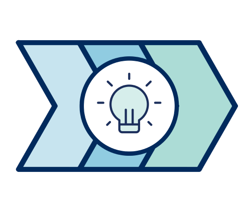

About
Home
Initiatives
Classroom Redesign
Contact Us
News and Reports
News and Reports
Things move quickly at TIL. There is always something on the go and something new on the horizon. Keep up to
date on our latest activities through our news column.
Transforming the Instructional Landscape (TIL) is an ongoing project at the University of Toronto that examines
how learning environments can be improved for both instructors and students. TIL employs design thinking to help
build better learning environments with students rather than for students. A wide range of professionals from
across UofT are also involved in the project’s exciting and innovative work.
All About The TIL Operations Working Group

Continue Reading >
Report Repository >
See All News and Blog Posts >
A New Vision for TIL

1
Since it was established in 2017, the Transforming the Instructional Landscape (TIL) project has renovated an impressive 93 classrooms to date.
What Does Trust Look Like in Online Spaces?
2
As the UofT community continues to navigate the transition to online learning, maintaining bonds of trust amongst instructors, staff, and students has become increasingly important.
Transforming The Instructional Landscape
3
For the past four years, the Innovation Hub has teamed up with the Learning Space Management (LSM) Team to examine how learning environments can be improved for both instructors and students.